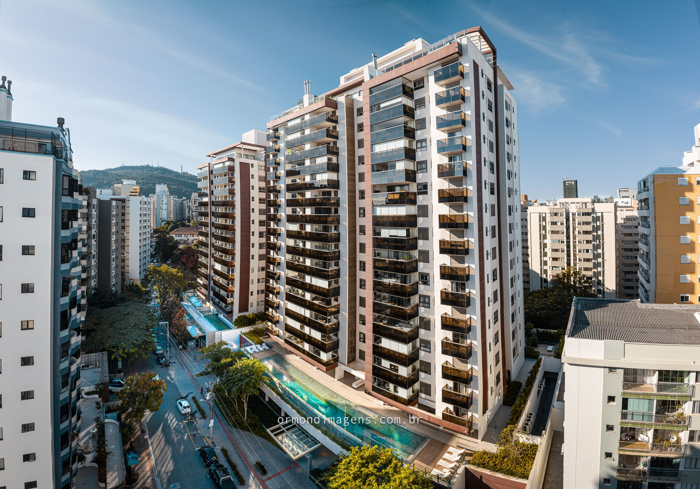
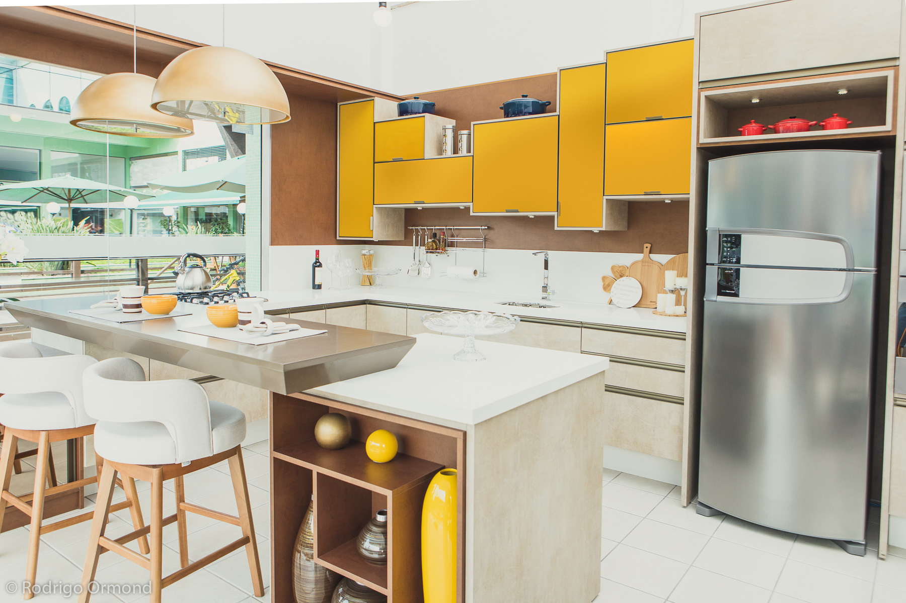

A fotografia aérea com drone revolucionou a forma como construtoras e incorporadoras comunicam seus empreendimentos. O que antes exigia helicóptero e custos proibitivos hoje está ao alcance de qualquer obra — e as possibilidades criativas e documentais são imensas.
Por que o Drone é Essencial na Construção Civil
A perspectiva aérea revela o que nenhuma câmera no chão consegue mostrar: a inserção do empreendimento no contexto urbano, a proximidade com o mar, parques e vias, o andamento da obra em relação ao cronograma e o potencial visual do terreno antes mesmo do projeto começar.
Para construtoras, as aplicações são variadas: documentação de progresso de obra, material de vendas para lançamentos, registros para relatórios técnicos e conteúdo para campanhas digitais que precisam impressionar.


A Técnica por Trás das Imagens
Trabalhamos com drones de alta resolução e câmeras estabilizadas, garantindo nitidez mesmo em condições de vento. O planejamento do voo é fundamental: estudamos a posição do sol, as condições climáticas e definimos os ângulos mais favoráveis para cada objetivo — seja documentação técnica ou material publicitário.
As imagens panorâmicas, em especial, são um diferencial poderoso: uma panorâmica aérea de 180° ou 360° coloca o comprador na obra antes mesmo de visitá-la, gerando uma conexão emocional que imagens convencionais não alcançam.
Regularização e Segurança
Todo o trabalho aéreo é realizado em conformidade com as regulamentações da ANAC e DECEA. Obtemos as autorizações necessárias, respeitamos as áreas de exclusão e garantimos a segurança de todas as pessoas e instalações envolvidas.
"Uma imagem aérea bem executada vale mais do que mil palavras em qualquer apresentação de empreendimento."